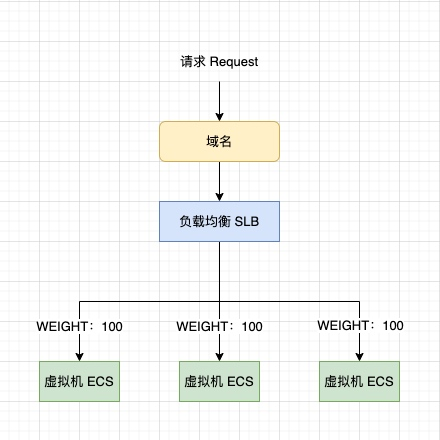
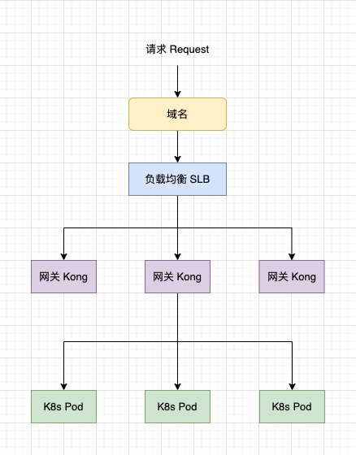
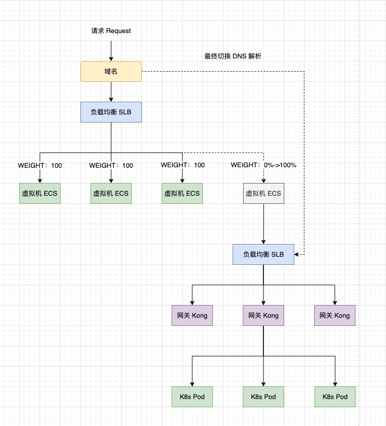

选择 Kong Gateway 作为网关，选择 Kubernetes 作为容器资源编排平台，很可能是架构调整的方案，到目前为止，我们只是验证了该方案的可行性，还停留在调研部分，接下来是真正关键的部分：迁移。
迁移的要求
- 程序性可控，具备可操作性。
- 平滑稳妥，用户不感知。
- 尽可能兼容，对开发，测试人员友好。
- 有回退方案。
新老架构图
老架构是通过阿里云负载均衡，负载到某几台虚拟机的模式。新架构是请求负载的网关实例后，再转发到后端业务实例的模式。
老方案架构图

新方案架构图

过渡方案架构图
为保证服务平滑迁移，我们希望能把一部分老架构的流量迁移到新架构中，同时也要保证这个流量是可控的，比如说是按 0 -> 100% 之间可控。
过渡方案架构图

上图方案中，我们在老架构的负载均衡后增加了一个特殊的节点，该节点本身不处理请求，但是可以将请求转发到新架构中，并能拿到处理结果的返回。然后我们调整节点的权重，控制流量转移到新架构中去。等到全部流量都导到新架构中去时，我们从源头将域名解析切换到新架构的负载均衡中。上述负载均衡都是阿里云公网 IP 型的。
简单评价下，该方案导流到新架构的流量大小是可控的（从 0 到 1）。迁移方案过程中，老架构后端 ECS 一直保留，只要将特殊节点的权重置 0，即可回退。扩展性好，可通过控制特殊节点数量，水平扩缩。
注意点：随着流量渐渐转移到新架构中，上图中那个特殊节点转发的流量渐渐变成了全量，对此我们需要有相应的监控，因为该节点才是整个方案中的瓶颈。另外该特殊节点是可以水平扩展了，一个不够的话可以部署 2 个，甚至 3 个，这个完全取决于待迁移服务的流量大小。
总结
介绍了一个简单的架构迁移方案，但实际上也能应对大部分的场景，兼顾高效和可行性。迁移方案的设计需要熟悉新老两套架构，还要兼顾业务场景，某种角度说，迁移方案是没有优劣的，合适的就是最好的。